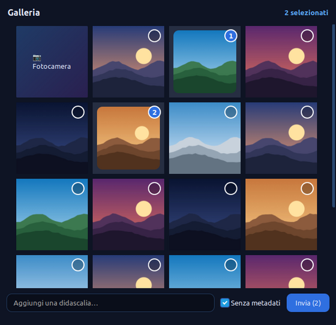
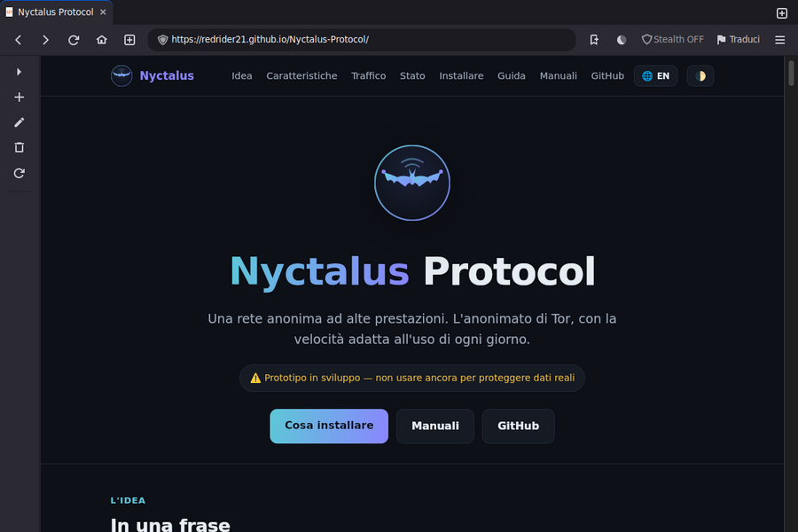
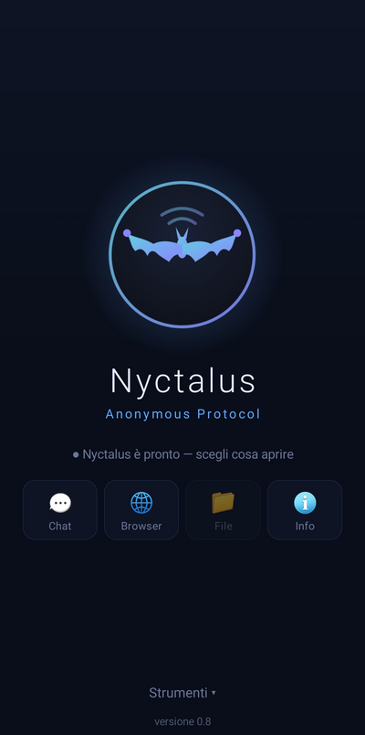
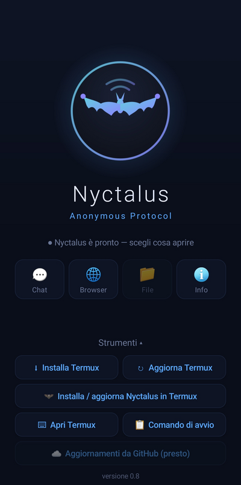
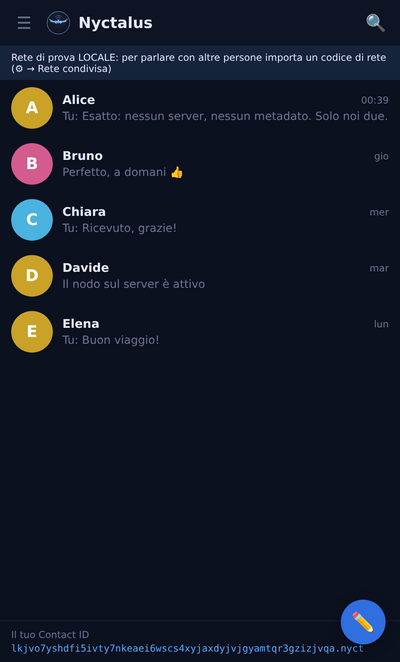
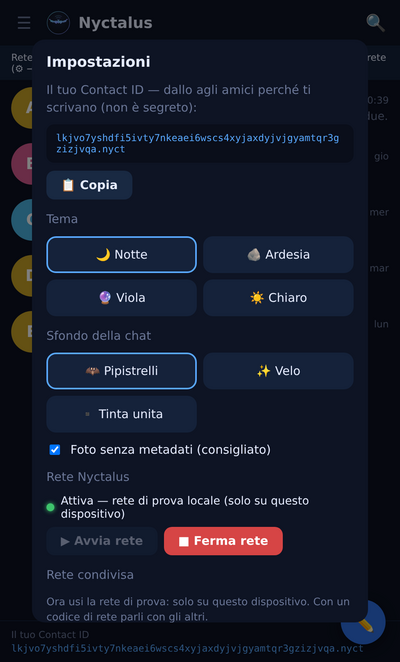

In una fraseIn one sentence
Ogni utente è anche un nodo, così la rete diventa più veloce man mano che cresce. Il traffico è camuffato da normale navigazione, e i dati viaggiano spezzati in tanti frammenti su molte strade in parallelo — una ragnatela — per ricomporsi solo a destinazione. Every user is also a node, so the network gets faster as it grows. Traffic is disguised as ordinary browsing, and data travels split into many fragments over many parallel paths — a spider's web — reassembling only at the destination.
Sul PC e sul telefonoOn the PC and on the phone
Schermate su dati dimostrativi (contatti e foto inventati). Tocca un'immagine per vederla grande.Screens with demo data (made-up contacts and photos). Tap an image to see it full size.
PC (Linux)PC (Linux)





Telefono (Android)Phone (Android)









A confronto, onestamenteSide by side, honestly
Tor è la rete anonima di riferimento: matura, studiata da vent'anni, con milioni di utenti. Nyctalus è un prototipo che prova scelte diverse. Qui sotto: prima quello che abbiamo misurato con i programmi veri, poi cosa c'è e cosa manca in ciascuno.Tor is the reference anonymity network: mature, studied for twenty years, with millions of users. Nyctalus is a prototype trying different choices. Below: first what we measured with the real programs, then what each one has and lacks.
MisuratoMeasured
Simulazione con Shadow (il simulatore usato nella ricerca su Tor): Tor 0.4.9 e Nyctalus veri sulla stessa Internet simulata (30 ms fra due computer, linee da 50/20 Mbit), stessi utenti, stesso attacco, 3 ripetizioni salvo dove indicato; velocità con file da 5 MB; velocità rimisurata con la versione attuale (0.3.21) il 14/11/2026: 48 scaricamenti, nessuno fallito. In Mbit/s più alto è meglio, nei tempi più basso è meglio. Misure interne: i PC che aiutano promossi a guardie accorciano i tempi del 18% con 8 utenti; più uscite per utente non accelerano (la strettoia è l'entrata). Come rifarla: simulazione/LEGGIMI.md.Simulation with Shadow (the simulator used in Tor research): real Tor 0.4.9 and Nyctalus on the same simulated Internet (30 ms between any two computers, 50/20 Mbit lines), same users, same attack, 3 runs unless stated; speed with 5 MB files; speed re-measured with the current version (0.3.21) on 14/11/2026: 48 downloads, none failed. In Mbit/s higher is better, in times lower is better. Internal measurements: users' PCs promoted to guards cut times by 18% with 8 users; more exits per user do not speed up (the entry is the bottleneck). How to reproduce it: simulazione/LEGGIMI.md.
| Tor 0.4.9 | Nyctalus | |
|---|---|---|
| Scaricare 5 MB, linea pulitaDownload 5 MB, clean line | 6,4 Mbit/s | 13,6 · +113% |
| … nodi di velocità diverse (da 5 a 50 Mbit)… nodes of different speeds (5 to 50 Mbit) | 6,2 Mbit/s | 11,2 · +81% |
| … nodi diversi, 4 utenti insieme… different nodes, 4 users at once | 2,6 Mbit/s | 5,1 · +95% |
| … con l'1% di pacchetti persi (Wi-Fi, rete mobile)… with 1% packet loss (Wi-Fi, mobile) | 2,0-2,3 Mbit/s | 2,4 |
| … con il 2% di pacchetti persi… with 2% packet loss | 0,47 Mbit/s | 1,11 · ×2,4 |
| … nodi tutti saturi, 4 utenti (20 ripetizioni)… all nodes saturated, 4 users (20 runs) | 2,66 Mbit/s | 3,24 · +22% |
| … nodi tutti saturi, 8 utenti… all nodes saturated, 8 users | 1,47 Mbit/s | 2,02 · +37% |
| 4 scaricamenti insieme da 4 siti (nodi da 10 Mbit, 5 ripetizioni): tempo per finirli4 downloads at once from 4 sites (10 Mbit nodes, 5 runs): time to finish them | 28,2 s | 21,5 s · 24% più rapido24% faster |
| … 4 utenti insieme… 4 users at once | 71,2 s (mediana 63,5)(median 63.5) | 57,0 s · 20% più rapido20% faster (mediana 52,8: 17% più rapido)(median 52.8: 17% faster) |
| Primo byteFirst byte | 0,49 s | 0,48 s — alla parion par |
| Avversario che vede tutte le linee: scaricamenti attribuiti a chi li ha fattiAdversary watching every line: downloads linked to who made them | 91% | 80% — alla pari: è il limite di tutte le reti in tempo realeon par: the limit of every real-time network |
| Chat: lo stesso avversario scopre chi scrive a chiChat: the same adversary finds who writes to whom | — (Tor non ha una chat sua)— (Tor has no chat of its own) | normale 100%; modalità riservata: al livello del caso (17-33%, a caso 20%)normal 100%; private mode: at chance level (17-33%, chance 20%) |
| Un gestore di nodi disonesto collega entrata e uscitaA dishonest node operator links entry and exit | no (famiglie e guardie)no (families and guards) | no: 0% (famiglie e guardie, dalla 0.3.3)no: 0% (families and guards, since 0.3.3) |
Cosa c'èWhat is there
| Tor | Nyctalus | |
|---|---|---|
| MaturitàMaturity | 20 anni, revisioni indipendenti, milioni di utenti, migliaia di nodi20 years, independent audits, millions of users, thousands of nodes | prototipo, non ancora revisionato; reti piccoleprototype, not yet audited; small networks |
| TrasportoTransport | TCP | QUIC/UDP (un pacchetto perso non ferma gli altri)QUIC/UDP (a lost packet does not stall the others) |
| Più strade insiemeSeveral paths at once | sì (conflux, dalla 0.4.8)yes (conflux, since 0.4.8) | sì (2 circuiti di serie, fino a 8)yes (2 circuits by default, up to 8) |
| Camuffamento del trafficoTraffic camouflage | ponti con obfs4, Snowflake, meek: collaudati contro la censurabridges with obfs4, Snowflake, meek: proven against censorship | di serie traffico simile a rumore, oppure forma HTTP/3 (i nodi sembrano un sito sulla porta 443); ponti nascosti; nessuna risposta alle sondenoise-like traffic by default, or the HTTP/3 form (nodes look like a web site on port 443); hidden bridges; no answer to probes |
| Rumore di fondoCover traffic | limitatolimited | regolabile per rete; buste finte nella modalità riservataadjustable per network; dummy envelopes in private mode |
| Chat, chiamate, videochiamateChat, calls, video calls | con app esternewith external apps | integrate, con modalità riservata contro chi vede tuttobuilt in, with private mode against a global observer |
| File grandiLarge files | con app esterne (OnionShare)with external apps (OnionShare) | integrati: pezzi verificati, più strade, pausa e ripresabuilt in: verified pieces, several paths, pause and resume |
| BrowserBrowser | Tor Browser: impronta uniforme, il riferimentoTor Browser: uniform fingerprint, the reference | browser con impronta uniforme fra gli utenti Nyctalus + Nyctalus Firefox (profilo sul modello di Tor Browser)browser with a fingerprint uniform among Nyctalus users + Nyctalus Firefox (profile modelled on Tor Browser) |
| Siti interniHidden sites | .onion |
.nyct |
| LinguaggioLanguage | C | Rust (meno errori di memoria)Rust (fewer memory bugs) |
In breve: in velocità, in simulazione, Nyctalus è più veloce di Tor in tutti gli scenari misurati (da +22% con i nodi saturi a +113% sulla linea pulita, rimisurato con la 0.3.21). In anonimato sul tempo reale alla pari; sulla chat, con la modalità riservata, va oltre. Tor resta avanti in maturità, numero di utenti e camuffamento collaudato. Dove siamo e le prossime tappe: piano verso una rete anonima.In short: in speed, in simulation, Nyctalus is faster than Tor in every measured scenario (from +22% with saturated nodes to +113% on a clean line, re-measured with 0.3.21). In anonymity on par for real time; on chat, with private mode, it goes further. Tor stays ahead in maturity, number of users and proven camouflage. Where we are and next steps: plan towards an anonymous network (Italian).
Come viaggia un datoHow data travels
┌──► nodo ──► nodo ──┐ TuYou ──► [INGRESSOENTRY] ────┼──► nodo ──► nodo ──┼──► RICOMPOSIZIONEREASSEMBLY ──► destinazionedestination (fissofixed) ├──► nodo ──► nodo ──┤ └──► nodo ──► nodo ──┘
- CamuffamentoCamouflage — il traffico sembra una normale connessione HTTPS (QUIC su UDP 443).traffic looks like an ordinary HTTPS connection (QUIC over UDP 443).
- Ingresso fissoFixed entry — il primo nodo resta lo stesso per settimane: è l'unico che vede il tuo IP, ma non sa dove vai.the first node stays the same for weeks: the only one that sees your IP, but never where you go.
- RagnatelaSpider's web — i dati, spezzati in frammenti, viaggiano in parallelo su più strade.data, split into fragments, travels in parallel over many paths.
- CipollaOnion — ogni frammento è chiuso in più strati; ogni nodo ne toglie uno e vede solo il successivo.each fragment is wrapped in layers; each node peels one and sees only the next hop.
- RicomposizioneReassembly — a destinazione i frammenti tornano in ordine.at the destination the fragments are put back in order.
Celle a lunghezza fissa e rumore di fondoFixed-length cells and cover traffic
Nascondere dove vai non basta: chi osserva la rete può provare a dedurre cosa fai dalla forma del traffico — la dimensione dei pacchetti e i loro tempi. Nyctalus appiattisce entrambe. Hiding where you go is not enough: an observer can try to infer what you do from the shape of the traffic — packet sizes and their timing. Nyctalus flattens both.
Celle a lunghezza fissaFixed-length cells
Dentro un circuito, i dati non viaggiano come pacchetti di lunghezza variabile, ma spezzati in celle tutte della stessa dimensione: la lunghezza reale sta in un campo interno, il resto è riempimento a zero.Inside a circuit, data does not travel as variable-length packets, but split into cells that are all the same size: the real length lives in an internal field, the rest is zero padding.
+--------+---------+-----------+----------------+------------------------+
| flusso | comando | lunghezza | dati (reali) | riempimento a zero |
| 2 B | 1 B | 2 B | 0...1359 B | fino alla taglia fissa|
+--------+---------+-----------+----------------+------------------------+
intestazione (5 B) CAPACITA = 1359 B
unità dati sul filo (sequenza + cella) = 1372 B = pacchetto Sphinx
- Un osservatore non deduce la lunghezza dei contenuti: una risposta di 1 byte e una di 1359 occupano lo stesso numero di celle identiche.An observer cannot infer content lengths: a 1-byte reply and a 1359-byte one occupy the same number of identical cells.
- Il riempimento è dentro lo strato cifrato: i nodi intermedi vedono solo celle uguali per dimensione a ogni tratta (lo strato a cipolla, ChaCha20, non cambia la lunghezza).The padding is inside the encrypted layer: relay nodes see only cells of equal size on every hop (the onion layer, ChaCha20, does not change the length).
- È la condizione necessaria perché il rumore di fondo funzioni: una cella finta dev'essere indistinguibile da una vera, e lo è solo se hanno la stessa forma.It is the necessary condition for cover traffic to work: a fake cell must be indistinguishable from a real one, which only holds if they share the same shape.
Rumore di fondo (cover traffic)Cover traffic
Con l'opzione --cover HZ si iniettano celle fittizie a ritmo di Poisson: indistinguibili dalle vere, vengono scartate dall'altro estremo. Funziona in entrambe le direzioni — in salita sul demone, in discesa sul nodo d'uscita. Mascherano quando si invia davvero: un osservatore vede un flusso uniforme sia che tu stia caricando una pagina sia che tu sia fermo.With the --cover HZ option, dummy cells are injected at a Poisson rate: indistinguishable from real ones, they are discarded by the other end. It works in both directions — upstream on the daemon, downstream on the exit node. They mask when you actually send: an observer sees a uniform flow whether you are loading a page or idle.
nyctalus circuit ... --cover 5 # salita; default 0 (spento)# upstream; default 0 (off) nyctalus node ... --cover 5 # discesa# downstream
Il traffico che il tuo nodo inoltra per conto di altri utenti funge già da copertura naturale. Sul filo, inoltre, ogni datagramma può essere offuscato (--obfuscation): per un DPI è rumore casuale, senza la firma di QUIC.The traffic your node forwards for other users already acts as natural cover. On the wire, moreover, every datagram can be obfuscated (--obfuscation): to a DPI it is random noise, without QUIC's signature.
Cosa la distingueWhat sets it apart
Più utenti, più veloceMore users, more speed
Ogni PC è anche un nodo: la capacità cresce con la rete.Every PC is also a node: capacity grows with the network.
Ragnatela multipercorsoMultipath web
I dati viaggiano in parallelo su più percorsi, non su una sola strada.Data travels in parallel over many paths, not a single route.
Trasporto QUICQUIC transport
Su UDP: un pacchetto perso non blocca tutti gli altri.Over UDP: a lost packet does not stall all the others.
Camuffamento di serieCamouflage by default
Da fuori è rumore, oppure (forma HTTP/3) un normale sito sulla porta 443. Chi sonda un nodo non riceve risposta, o riceve una pagina 404.From outside it is noise, or (HTTP/3 form) an ordinary web site on port 443. Whoever probes a node gets no answer, or a 404 page.
Siti interni .nyct.nyct hidden sites
Servizi nascosti nella rete, come i .onion, ma più rapidi.Hidden services like .onion, but faster.
Scritto in RustWritten in Rust
Previene all'origine i bug di memoria, critici per l'anonimato.Prevents memory bugs at the source, critical for anonymity.
A che punto siamoWhere we are
Fatto e testato: 143 test automatici del motore e 841 verifiche di funzionamento e sicurezza (test/esegui-tutti.sh):Done and tested: 143 automated engine tests and 841 functional and security checks (test/esegui-tutti.sh):
- Nucleo del protocollo (L2)Protocol core (L2) — frammentazione, etichette segrete, cifratura end-to-end, ricomposizione anti-DoS.fragmentation, secret labels, end-to-end encryption, DoS-resistant reassembly.
- Stretta di mano Noise NKNoise NK handshake — segreto mai trasmesso, forward secrecy, mittente anonimo.secret never transmitted, forward secrecy, anonymous sender.
- Indirizzi .nyct.nyct addresses — chiave pubblica in base32, con controllo anti-errori.public key in base32, with typo-check.
- Livello a cipolla (data-plane)Onion layer (data-plane) — gli strati simmetrici di ogni pacchetto.the symmetric layers of every packet.
- Circuito anonimo a 3 saltiAnonymous 3-hop circuit — nodi intermedi + proxy SOCKS5 attraverso il circuito; il mid non vede il contenuto.relay nodes + SOCKS5 proxy through the circuit; the mid node is blind to the content.
- Elenco firmato + collegamenti autenticatiSigned directory + authenticated links — autorità Ed25519; il client pinna il guard, ogni relè il nodo a valle.Ed25519 authority; the client pins the guard, each relay its next hop.
- Circuito condivisoShared circuit — un solo circuito trasporta più connessioni (celle multiplexate dentro l'onion); i relè restano ciechi ai flussi.one circuit carries many connections (cells multiplexed inside the onion); relays stay blind to the flows.
- Anti-correlazioneAnti-correlation — il numero di sequenza non viaggia in chiaro (nonce da contatore locale).the sequence number never travels in the clear (nonce from a local counter).
- Ragnatela (conflux)Spider's web (conflux) — un singolo scaricamento viene spezzato su più circuiti (guard e uscita condivisi) e ricomposto a destinazione: usa la banda di più strade.a single download is split across several circuits (shared guard and exit) and reassembled at the destination: it uses the bandwidth of many roads.
- Ponte verso i .onion di TorBridge to Tor .onion — l'uscita raggiunge i siti
.oniontramite il Tor già presente sul sistema (via SOCKS).the exit reaches.onionsites through the system's existing Tor (via SOCKS). - Camuffamento del trasportoTransport camouflage — con una chiave di rete, ogni datagramma UDP è offuscato: sul filo è rumore casuale, niente firma di QUIC per il DPI. In alternativa la forma HTTP/3: i nodi sembrano un sito HTTP/3 con il nome scelto dal gestore. Ponti nascosti per entrare da indirizzi fuori elenco.with a network key, every UDP datagram is obfuscated: on the wire it looks like random noise, no QUIC signature for DPI. Alternatively the HTTP/3 form: nodes look like an HTTP/3 site with the name chosen by the operator. Hidden bridges to enter through unlisted addresses.
- Strumenti da terminaleTerminal tools — demone da configurazione (
start/status),exec(stile torsocks) emonitor(cruscotto delle metriche).config-driven daemon (start/status),exec(torsocks-style) andmonitor(metrics dashboard). - Siti interni .nyct (punto d'incontro, multi-salto).nyct hidden sites (rendezvous, multi-hop) — un servizio si registra a un punto d'incontro scelto in automatico; client e servizio lo raggiungono con un circuito a più salti e si incontrano lì, cifrati end-to-end (Noise NK). Il nodo d'incontro non vede gli IP né il contenuto. Comandi
site/browse, oppure dal browser via proxy SOCKS.a service registers at an automatically chosen rendezvous; client and service reach it over a multi-hop circuit and meet there, end-to-end encrypted (Noise NK). The rendezvous node sees neither IPs nor content. Commandssite/browse, or from the browser via the SOCKS proxy. - Celle a lunghezza fissa + rumore di fondoFixed-length cells + cover traffic — tutte le celle hanno la stessa dimensione (l'osservatore non deduce la lunghezza dei contenuti) e si possono iniettare celle finte a ritmo di Poisson (
--cover) per mascherare i tempi. Vedi la sezione Traffico.all cells are the same size (an observer cannot infer content lengths) and dummy cells can be injected at a Poisson rate (--cover) to mask timing. See the Traffic section. - Browser dedicatoDedicated browser — clone di Firefox (GTK/WebKit); parte come un browser normale, lo stealth (rete Nyctalus) si accende col bottone, e i
.nyctlo attivano da soli.a Firefox clone (GTK/WebKit); it starts as an ordinary browser, stealth (the Nyctalus network) is toggled with a button, and.nyctaddresses turn it on by themselves. - Chat .nyct (senza server, senza metadati).nyct chat (no server, no metadata) — ogni utente è un indirizzo
.nyct(il suo Contact ID); motore in Rust (nyctalus chat) + finestra GTK. Oltre all'anonimato e alla cifratura E2E, chi scrive è autenticato da un secondo handshake Noise NK dentro il tunnel: nessuno può spacciarsi per un contatto. Vedi la guida alla chat.each user is a.nyctaddress (their Contact ID); Rust engine (nyctalus chat) + GTK window. Beyond network anonymity and E2E encryption, the sender is authenticated by a second Noise NK handshake inside the tunnel: nobody can impersonate a contact. See the chat guide. - Mini-launcher da desktopDesktop mini-launcher — pannello trascinabile con bottoni quadrati (orizzontale/verticale), dimensione regolabile e tasti rapidi configurabili, per lanciare Browser e Chat. Client grafici in Python+GTK3; il motore resta in Rust.a draggable panel with square buttons (horizontal/vertical), adjustable size and configurable hotkeys, to launch Browser and Chat. Graphical clients in Python+GTK3; the engine stays in Rust.
- Chat in stile Telegram, con allegatiTelegram-style chat, with attachments — temi e sfondi, menu col tasto destro, foto e video a tutta bolla, lettore audio, fotocamera, selettore degli allegati a griglia, foto senza metadati. Gli allegati viaggiano a blocchi dentro la sessione cifrata, con verifica BLAKE3 finale.themes and backgrounds, right-click menus, full-bubble photos and videos, audio player, camera, grid attachment picker, photos stripped of metadata. Attachments travel in blocks inside the encrypted session, with a final BLAKE3 check.
- App per il telefono (Android)Phone app (Android) — il motore gira in Termux, l'app (APK) lo installa e lo avvia da sola. La chat è una web-app in stile Telegram. Dalla schermata di benvenuto si aprono Chat, Browser, File, Terminale e Info.the engine runs in Termux, and the app (APK) installs and starts it by itself. The chat is a Telegram-style web app. The welcome screen opens Chat, Browser, Files, Terminal and Info.
- Browser del telefono con modalità NyctalusPhone browser with Nyctalus mode — browser in stile Chrome; con 🦇 tutto il traffico passa dalla rete. Prima di aprire una pagina verifica che il traffico passi davvero da Nyctalus, altrimenti non apre nulla. WebRTC è spento, le schede sono in incognito e i
.nyctsi aprono solo in questa modalità.Chrome-style browser; with 🦇 all traffic goes through the network. Before opening a page it checks that traffic really goes through Nyctalus, otherwise it opens nothing. WebRTC is off, tabs are incognito, and.nyctsites open only in this mode. - Rete condivisa pronta all'usoReady-to-use shared network — l'installatore chiede il ruolo (client, gestore, nodo). Il pacchetto server installa i nodi come servizi di sistema.
nyctalus-retefirma l'elenco dei nodi e crea il codice di rete da dare ai client;nyctalus-rete casafa una rete di casa per provare telefono ↔ PC. I nodi possono stare anche a casa con l'IP dinamico (annunciati con un nome No-IP/DuckDNS) e su Raspberry Pi;nyctalus-rete rubricaaccende rubrica e casella anche sul server.the installer asks for the role (client, manager, node). The server package installs nodes as system services.nyctalus-retesigns the node list and creates the network code for clients;nyctalus-rete casabuilds a home network to try phone ↔ PC. Nodes can also run at home with a dynamic IP (announced with a No-IP/DuckDNS name) and on a Raspberry Pi;nyctalus-rete rubricaruns the directory and mailbox on the server too. - Programma FileFiles program — file grandi ai contatti attraverso la rete: divisi in pezzi verificati (BLAKE3), su più percorsi in parallelo, con pausa e ripresa anche dopo uno spegnimento; solo dai contatti, con «Accetta» sopra una soglia. Sul telefono niente copie (si sceglie nelle cartelle e il motore legge il file dov'è) e un archivio privato dei ricevuti con spazio, elimina e condividi. Anche l'ℹ️ Info del messaggio: quando è stato consegnato e visualizzato.large files to your contacts through the network: split into verified pieces (BLAKE3), over several paths in parallel, with pause and resume even after a shutdown; only from contacts, with «Accept» above a threshold. On the phone no copies (you pick in your folders and the engine reads the file where it is) and a private archive of received files with space, delete and share. Plus message ℹ️ Info: when it was delivered and seen.
- Chiamate e videochiamate, temi, rubrica, notifiche, casella cifrata, spunteCalls and video calls, themes, directory, notifications, encrypted mailbox, ticks — chiamate vocali e videochiamate 📞📹 anonime attraverso la rete (muto, vivavoce, volume, qualità della linea, passaggio voce↔video, riquadro spostabile e scambiabile come in Telegram); temi unici per tutti i programmi; la rubrica della rete (ci si iscrive con un nome, si vede chi è in linea); notifiche dei messaggi anche con l'app chiusa, senza Google; la casella cifrata per scrivere a chi non è in linea (buste Noise X: solo il destinatario legge, la casella non sa chi scrive); spunte come Telegram (✓ spedito, ✓✓ consegnato, ✓✓ blu letto) e messaggi mai persi.voice and video calls 📞📹, anonymous through the network (mute, speaker, volume, line quality, voice↔video switch, Telegram-style movable and swappable picture-in-picture); one theme for every program; the network directory (sign up with a name, see who is online); message notifications even with the app closed, without Google; the encrypted mailbox to write to people who are offline (Noise X envelopes: only the recipient reads, the mailbox does not know who wrote); Telegram-style ticks (✓ sent, ✓✓ delivered, blue ✓✓ read) and no lost messages.
- Siti .nyct con un comando.nyct sites with one command —
nyctalus-sito: pagine fisse o un sito dinamico dietro un server web locale, online sulla rete (anche sempre acceso come servizio), senza rivelare dove stanno.nyctalus-sito: static pages or a dynamic site behind a local web server, online on the network (also always-on as a service), without revealing where they are. - Più veloce di Tor (misurato)Faster than Tor (measured) — in simulazione (Shadow, contro Tor 0.4.9) più veloce in tutti gli scenari misurati: da +22% con i nodi saturi a +113% sulla linea pulita, rimisurato con la 0.3.21. Merito di BBR, scelta dei nodi pesata per banda, ragnatela con distributore intelligente, celle piene, collegamenti riusati fra nodi. Vedi il confronto.in simulation (Shadow, against Tor 0.4.9) faster in every measured scenario: from +22% with saturated nodes to +113% on a clean line, re-measured with 0.3.21. Thanks to BBR, bandwidth-weighted node choice, a smart spider's-web scheduler, full cells, reused links between nodes. See the comparison.
- Invisibile a chi sondaInvisible to probers — i nodi camuffati e i ponti nascosti (entrate fuori elenco) non rispondono a chi li sonda senza chiave; nella forma HTTP/3 i nodi sembrano un sito sulla porta 443 e anche il ripiego su TCP è un vero HTTPS; a chi sonda (anche con Chrome) risponde una pagina 404.camouflaged nodes and hidden bridges (unlisted entries) do not answer probers without the key; in the HTTP/3 form nodes look like a web site on port 443 and the TCP fallback is real HTTPS too; probers (even Chrome) get a 404 page.
- Anche dove UDP è bloccatoEven where UDP is blocked — se la rete blocca UDP il client passa da solo a TCP sulla stessa porta, camuffato come sempre.if the network blocks UDP the client switches by itself to TCP on the same port, camouflaged as always.
- 🦇 Aiuta la rete🦇 Help the network — il PC di un utente, se vuole, fa anche da nodo solo intermedio (mai uscita), con un tetto di banda.a user's PC can, if they want, also act as a middle-only node (never an exit), with a bandwidth cap.
- Verificato sui pacchettiVerified on the wire — in Shadow si catturano i pacchetti di tutte le macchine: solo UDP/QUIC (o TCP di ripiego), ragnatela e cipolla confermate, nessun nome in chiaro; simulazioni ripetibili per rifare identico ogni caso.in Shadow every machine's packets are captured: only UDP/QUIC (or fallback TCP), spider's web and onion confirmed, no names in clear; repeatable simulations to replay any case exactly.
- Forma «videochiamata»«Video call» form — a scelta della rete, il traffico sembra una chiamata WebRTC: controlli STUN della linea e pacchetti video SRTP da ~1200 byte, autenticati con la chiave della rete; chi sonda un nodo non riceve niente e il ripiego su TCP è un vero TLS.if the network chooses it, traffic looks like a WebRTC call: STUN line checks and ~1200-byte SRTP video packets, authenticated with the network key; probers get nothing and the TCP fallback is real TLS.
- Chat da mixnet e copertura costanteMixnet chat and constant cover — nella modalità riservata ogni nodo trattiene le buste per un ritardo casuale scelto dal mittente e ne escono rimescolate nel tempo; a scelta il traffico va a ritmo fisso, vero o finto: la linea resta piatta anche mentre scarichi o chiami (misurato).in private mode every node holds the envelopes for a random delay chosen by the sender, so they leave shuffled in time; optionally traffic runs at a fixed rate, real or dummy: the line stays flat even while you download or call (measured).
- Più capacità: guardie promosse e uscite diverseMore capacity: promoted guards and different exits — i PC che aiutano la rete e restano accesi diventano anche entrate (mai uscite), decise dalla stabilità misurata dal gestore: misurato −18% sul tempo con 8 utenti. Il client può anche usare più uscite, una per sito, perché ognuna veda meno siti suoi (misurato: non accelera).helping PCs that stay online also become entry nodes (never exits), decided by the stability the manager measures: measured −18% time with 8 users. The client can also use several exits, one per site, so each sees fewer of its sites (measured: no speed gain).
- Più robustaMore robust — se un nodo si spegne a metà di uno scaricamento, le celle perse si rispediscono sugli altri circuiti e se ne costruisce uno nuovo: il file arriva integro. Solo chi ha la chiave privata di un sito
.nyctpuò registrarlo: un impostore non può più renderlo irraggiungibile.if a node goes down halfway through a download, the lost cells are resent on the other circuits and a new circuit is built: the file arrives intact. Only whoever holds a.nyctsite's private key can register it: an impostor can no longer make it unreachable. - Impostazioni a schedeTabbed settings — tutte le regolazioni, anche quelle del motore e la qualità di chiamate e videochiamate, dalle Impostazioni divise per area: telefono, launcher e browser.every setting, including the engine ones and call/video-call quality, from Settings split by area: phone, launcher and browser.
- 🔐 Dati protetti da passphrase🔐 Passphrase-protected data — a scelta, identità, contatti, conversazioni e file ricevuti sono cifrati sul dispositivo (Argon2id + XChaCha20-Poly1305): chi ruba o apre il PC o il telefono spento non legge nulla. La passphrase si chiede a ogni avvio; i file arrivano già cifrati a pezzi e si aprono al volo in una copia temporanea, cancellata alla chiusura.optionally, identity, contacts, conversations and received files are encrypted on the device (Argon2id + XChaCha20-Poly1305): whoever steals or opens the switched-off PC or phone reads nothing. The passphrase is asked at every start; files arrive already encrypted in pieces and open on the fly in a temporary copy, wiped on exit.
- 🩺 Collaudo della rete vera🩺 Real-network checkup —
nyctalus-collaudo, da PC, telefono o server: elenco firmato e nodi vivi con i tempi, nodi muti a chi non ha la chiave, i siti vedono l'uscita e non il tuo IP, nessun nome di sito nel DNS, velocità, chat e servizi; con--guidatoanche le prove a mano. Rapporto ✓/✗.nyctalus-collaudo, from PC, phone or server: signed list and live nodes with timings, nodes silent to whoever lacks the key, sites see the exit and not your IP, no site name in DNS, speed, chat and services; with--guidatoalso the manual checks. ✓/✗ report. - 🛡 Release firmate e codice ricontrollato🛡 Signed releases and re-checked code — ogni release ha
SHA256SUMSfirmato (Ed25519) e lo script di Termux installa solo se la firma è valida; nessununsafenel motore, prove a raffica (hanno trovato e fatto correggere un crash vero), servizi di sistema induriti, 0 vulnerabilità note nelle dipendenze.every release has a signedSHA256SUMS(Ed25519) and the Termux script installs only if the signature is valid; nounsafein the engine, fuzz-style tests (they found and got a real crash fixed), hardened system services, 0 known vulnerabilities in dependencies. - 🛡 Guardie di riserva🛡 Backup guards — il client ricorda 3 entrate fisse (come Tor) e usa sempre la prima; se è spenta entra dalla seconda e torna alla prima appena risponde, mai da un nodo a caso. Se l'entrata cade a tunnel acceso il tunnel si ricostruisce da solo, e i siti
.nyctreggono un nodo spento ancora nell'elenco.the client remembers 3 fixed entries (like Tor) and always uses the first; if it is down it enters through the second and goes back to the first as soon as it answers, never through a random node. If the entry drops while the tunnel is up, the tunnel rebuilds itself, and.nyctsites cope with a dead node still in the list. - 🔏 Autocontrollo d'integrità🔏 Integrity self-check — ogni pacchetto porta l'elenco firmato delle impronte dei suoi file: gli installatori rifiutano un pacchetto con un file cambiato o aggiunto, e
nyctalus-integritaverifica in ogni momento che i programmi installati siano quelli pubblicati.every package carries the signed list of its files' fingerprints: installers refuse a package with a changed or added file, andnyctalus-integritachecks at any time that the installed programs are the published ones. - 🏠 Nodi senza uscita e 🍓 rete su Raspberry Pi🏠 No-exit nodes and 🍓 network on a Raspberry Pi — i nodi di casa fanno da guardia, intermedio e punto d'incontro (chat, chiamate, file, siti .nyct) senza mai far uscire su Internet la navigazione degli altri dal tuo indirizzo. Con
rete-raspberry.shla tua rete gira su un Raspberry Pi come servizio sempre acceso; sul PC il mini menu ha «🔗 Collegati a una rete».home nodes act as guard, middle and rendezvous (chat, calls, files, .nyct sites) without ever letting others' browsing leave from your address. Withrete-raspberry.shyour network runs on a Raspberry Pi as an always-on service; on the PC the mini menu has «🔗 Join a network». - 🏠 La tua rete a spunte, dal mini menu🏠 Your network with checkboxes, from the mini menu — sul PC, «⚙ → 🏠 La mia rete»: solo in casa o anche da Internet, senza uscita, sempre accesa, nodi e porte. La finestra mostra il comando equivalente del terminale (
nyctalus-rete casa …), lo esegue e mostra il codice da dare agli amici; c'è anche «Apri il firewall». Il terminale resta come prima.on the PC, «⚙ → 🏠 My network»: home only or also from the Internet, no exit, always on, nodes and ports. The window shows the equivalent terminal command (nyctalus-rete casa …), runs it and shows the code to give your friends; there is also «Open the firewall». The terminal works as before. - In arrivoComing — prove su rete vera (Internet, con più persone): velocità, chiamate, file, e rumore di fondo tarato lì; impronta identica a Chrome (valutare BoringSSL); più guardie per utente per gli scaricamenti paralleli, da pesare con l'anonimato; Mullvad Browser come «Nyctalus Browser (Firefox)»; fuzzing guidato; revisione indipendente; app Android senza Termux.real-network trials (Internet, several people): speed, calls, files, and cover traffic tuned there; a fingerprint identical to Chrome (evaluate BoringSSL); several guards per user for parallel downloads, weighed against anonymity; Mullvad Browser as «Nyctalus Browser (Firefox)»; guided fuzzing; independent audit; Android app without Termux.
Cosa installare, e doveWhat to install, and where
Una rete Nyctalus ha tre ruoli. I pacchetti si preparano dai sorgenti con strumenti/crea-installazioni.sh, che crea la cartella installazioni/ con una sottocartella per dispositivo e le istruzioni. Già pronti da scaricare nell'ultima release: Nyctalus-PC-Linux.zip, Nyctalus-Android.zip (app + pacchetto Termux), Nyctalus-Server-Linux.zip (-arm64 per Raspberry Pi), Nyctalus-Windows.zip (anteprima: doppio clic su Nyctalus.cmd). È un prototipo: provalo, ma non affidargli ancora dati davvero sensibili.A Nyctalus network has three roles. Packages are built from source with strumenti/crea-installazioni.sh, which creates the installazioni/ folder with one subfolder per device and the instructions. Ready to download in the latest release: Nyctalus-PC-Linux.zip, Nyctalus-Android.zip (app + Termux package), Nyctalus-Server-Linux.zip (-arm64 for Raspberry Pi), Nyctalus-Windows.zip (preview: double-click Nyctalus.cmd). It is a prototype: try it, but don't trust it with truly sensitive data yet.
- ClientClient — chi usa la rete. PC Linux:
PC-Linux/→./installa.sh, scelta 1. Telefono:Android/→ l'app, che installa Nyctalus in Termux.those who use the network. Linux PC:PC-Linux/→./installa.sh, option 1. Phone:Android/→ the app, which installs Nyctalus in Termux. - NodoNode — chi tiene in piedi la rete: un server sempre acceso (VPS).
Server-Linux/→sudo ./installa.sh, poi si mandano al gestore le righe d'elenco stampate.those who keep the network running: an always-on server (VPS).Server-Linux/→sudo ./installa.sh, then send the printed directory lines to the manager. - GestoreManager — chi firma l'elenco dei nodi e dà il codice di rete ai client. È un PC qualunque:
./installa.sh, scelta 2.those who sign the node list and give the network code to clients. Any PC will do:./installa.sh, option 2.
Da dove partire, per ogni situazione (provare da soli, PC ↔ telefono a casa, con un amico via Internet, rete con server): Inizia qui. Guida passo passo per la prova a distanza: Con un amico via Internet. Tutto in una pagina (cosa scaricare, client, nodo e gestore, tutte le opzioni spiegate): Guida completa.Where to start, for every situation (alone, PC ↔ phone at home, with a friend over the Internet, a network with servers): Start here (manuals in Italian). Step-by-step remote test: With a friend over the Internet. Everything on one page (downloads, client, node and manager setup, every option explained): Complete guide (Italian).
Guida rapidaQuick guide
1. Compilare1. Build
Serve Rust (profilo minimal sufficiente).You need Rust (the minimal profile is enough).
git clone https://github.com/RedRider21/Nyctalus-Protocol.git cd Nyctalus-Protocol cargo test # 95 test# 95 tests bash test/esegui-tutti.sh # tutte le prove di funzionamento e sicurezza# all functional and security checks cargo build --release # produce target/release/nyctalus# builds target/release/nyctalus
2. Proxy SOCKS5 (uso da terminale)2. SOCKS5 proxy (terminal use)
Sul nodo di uscita:On the exit node:
nyctalus exit --listen 0.0.0.0:4600
Stampa il comando single-hop completo, con l'impronta del certificato. Sul client:It prints the full single-hop command, with the certificate fingerprint. On the client:
nyctalus single-hop --to EXIT-IP:4600 --fingerprint <FINGERPRINT> --socks 127.0.0.1:1080 curl --socks5-hostname 127.0.0.1:1080 https://example.com
3. Circuito anonimo a 3 salti (autenticato)3. Anonymous 3-hop circuit (authenticated)
Un'autorità firma l'elenco dei nodi; client e relè lo verificano e autenticano ogni collegamento.An authority signs the node directory; client and relays verify it and authenticate every link.
# 1) autorità che firma l'elenco# 1) authority that signs the directory nyctalus authority # 2) avvia i nodi (stampano la loro riga per l'elenco)# 2) start the nodes (they print their directory line) nyctalus node --listen 0.0.0.0:4601 --directory directory.txt --authority <PUB> nyctalus node --listen 0.0.0.0:4602 --directory directory.txt --authority <PUB> nyctalus node --listen 0.0.0.0:4603 --directory directory.txt --authority <PUB> # 3) firma l'elenco con le righe stampate# 3) sign the directory with the printed lines nyctalus directory --authority-secret <SECRET> --entries 'a,x,fp;a,x,fp;a,x,fp' > directory.txt # 4) proxy SOCKS5 attraverso la ragnatela a più circuiti# 4) SOCKS5 proxy through the multi-circuit web nyctalus circuit --directory directory.txt --authority <PUB> --socks 127.0.0.1:1080 --circuits 2 --hops 3 curl --socks5-hostname 127.0.0.1:1080 http://example.com
--circuits N = strade parallele (min 1, max 8, default 2); --hops N = nodi per percorso (min 1, max 5, default 3; sotto 3 niente vero anonimato); --cover HZ = rumore di fondo (celle finte a ritmo di Poisson, default 0). Il trasporto è QUIC: i pacchetti persi si recuperano da soli e un flusso non blocca gli altri.Path settings: --circuits N = parallel roads (min 1, max 8, default 2); --hops N = nodes per path (min 1, max 5, default 3; below 3 there is no real anonymity); --cover HZ = cover traffic (dummy cells at a Poisson rate, default 0). Transport is QUIC: lost packets recover on their own and one flow never stalls the others.4. Trasferire un file (test del livello L2)4. Transfer a file (L2 layer test)
Sul ricevitore:On the receiver:
nyctalus receive --out received.bin --identity my.key
Stampa il comando send con l'indirizzo .nyct del ricevitore. Sul mittente:It prints the send command with the receiver's .nyct address. On the sender:
nyctalus send --to IP:4433 --fingerprint <FINGERPRINT> --recipient <ADDRESS>.nyct file
5. Comandi5. Commands
Per tipologia. L'elenco completo, con tutte le opzioni e le variabili d'ambiente: Tutti i comandi.By kind. The full list, with every option and environment variable: All commands (Italian).
Programmi con la finestraPrograms with a window
nyctalus-launcher | il mini menu: accende la rete, apre gli altri programmithe mini menu: starts the network, opens the other programs |
nyctalus-chat | la chat, con chiamate e videochiamatethe chat, with calls and video calls |
nyctalus-browser | il browser: normale o 🦇 attraverso la rete, siti .nyctthe browser: normal or 🦇 through the network, .nyct sites |
nyctalus-file | file grandi ai contattibig files to contacts |
nyctalus-firefox | il tuo Firefox con un profilo blindatoyour Firefox with a hardened profile |
Chat e file dal terminaleChat and files from the terminal
nyctalus-cli | io, contatti, scrivi, leggi, ascolta, invia, file, avvia, sblocca, cassaforte… (MANUALE-TERMINALE)io, contatti, scrivi, leggi, ascolta, invia, file, avvia, sblocca, cassaforte… |
Rete, siti e controlliNetwork, sites and checks
nyctalus-rete | collegarsi (importa, reti, aiuta, ponte), rete di casa (casa, ospite), gestire una rete (crea, aggiungi, firma, codice, protezione, rubrica, stabilita…)join (importa, reti, aiuta, ponte), home network (casa, ospite), run a network (crea, aggiungi, firma, codice, protezione, rubrica, stabilita…) |
nyctalus-sito | un sito .nyct: guida passo passo, crea, avvia, servizio (sempre acceso), esporta la chiavea .nyct site: step-by-step guide, crea, avvia, servizio (always on), esporta the key |
nyctalus-collaudo | il collaudo della tua rete vera: nodi, IP nascosto, DNS, velocità, chat (--guidato, --rapporto)checkup of your real network: nodes, hidden IP, DNS, speed, chat (--guidato, --rapporto) |
nyctalus-integrita | i programmi installati sono quelli pubblicati?are the installed programs the published ones? |
Server e telefonoServers and phone
./installa.sh | sul server: i nodi come servizi (--codice, --ponte, --utente…)on the server: nodes as services (--codice, --ponte, --utente…) |
nyctalus-server | i nodi installati: stato, righe, riavvia, loginstalled nodes: stato, righe, riavvia, log |
nyctalus-mobile | (Termux) il servizio del telefono: --sfondo, --ferma, --stato(Termux) the phone service: --sfondo, --ferma, --stato |
Il motore, per esperti (e le corrispondenze con Tor)The engine, for experts (and the Tor equivalents)
| Tor | Nyctalus | A cosa servePurpose |
|---|---|---|
tor | nyctalus start | demone + proxy SOCKS5daemon + SOCKS5 proxy |
| porta di controllocontrol port | nyctalus status | interrogare il demonequery the daemon |
nyx | nyctalus monitor | cruscotto testuale (nyx è il monitor ufficiale del Tor Project)text dashboard (nyx is the Tor Project's official monitor) |
torsocks | nyctalus exec | un programma dentro la retea program inside the network |
| servizio .onion.onion service | nyctalus site · browse | pubblicare e visitare un sito .nyctpublish and visit a .nyct site |
| relay, autoritàrelay, authority | nyctalus node · authority · directory · nodes | nodi, chiavi e elenco firmatonodes, keys and the signed list |
| ponti obfs4obfs4 bridges | --obfuscation · --mimic · --webrtc · --bridge | camuffamento e ponti nascosticamouflage and hidden bridges |
La chat .nyctThe .nyct chat
Una chat senza server e senza metadati: nessuna azienda in mezzo, nessun numero di telefono. Ogni persona è un indirizzo .nyct — il suo Contact ID — e i messaggi viaggiano cifrati fino all'altro capo dentro la rete (modello Ricochet/Cwtch).A chat with no server and no metadata: no company in the middle, no phone number. Each person is a .nyct address — their Contact ID — and messages travel end-to-end encrypted inside the network (Ricochet/Cwtch model).
AvvioStart
Dal launcher premi Chat, oppure da terminale:From the launcher press Chat, or from a terminal:
nyctalus-chat # installata# installed ./avvia-chat.sh # nel pacchetto, senza installare# in the package, without installing ./strumenti/demo-chat.sh # prova locale: due finestre# local demo: two windows
Il Contact IDThe Contact ID
Il codice in basso a sinistra (con Copia) è il tuo indirizzo nella rete: l'unica cosa da dare agli altri perché ti scrivano, come un numero o un indirizzo .onion. Non è segreto (puoi condividerlo). Il segreto è la chiave privata, che resta in ~/.nyctalus-chat/identita e non cambia nel tempo.The code at the bottom-left (with Copy) is your address on the network: the only thing to give others so they can message you, like a number or a .onion address. It is not secret (share it freely). The secret is the private key, kept in ~/.nyctalus-chat/identita and stable over time.
ParlarsiTalking
Premi «+», incolla l'indirizzo dell'altra persona e dagli un nome; selezionalo e scrivi. Oppure apri la 👥 rubrica della rete: ti iscrivi con un nome, vedi chi c'è e chi è in linea, e aggiungi con un clic. Serve che entrambi siate sulla stessa rete: il PC la importa con nyctalus-rete importa CODICE, il telefono dalla riga 🔗 Rete dell'app (o con 📲 Collega l'app dalla pagina della rete di casa). Senza rete la chat apre su una rete di prova locale (non raggiungi altre persone).Press «+», paste the other person's address and give it a name; select it and type. Or open the network's 👥 directory: sign up with a name, see who is there and who is online, and add them with one click. Both of you must be on the same network: the PC imports it with nyctalus-rete importa CODE, the phone from the app's 🔗 Network row (or with 📲 Link the app on the home network page). Without a network the chat opens on a local test network (you won't reach other people).
SicurezzaSecurity
Messaggi cifrati end-to-end; i relay non vedono il contenuto né gli IP. Chi scrive è autenticato: la chat verifica con la crittografia che il mittente possieda la chiave privata dell'indirizzo dichiarato, quindi nessuno può spacciarsi per un contatto. Resta la verifica umana del Contact ID (scambiatevelo per un canale fidato). È un prototipo non ancora verificato da revisori indipendenti: usalo per provarlo, non per dati reali.End-to-end encrypted messages; relays see neither content nor IPs. The sender is authenticated: the chat cryptographically verifies that the sender holds the private key of the claimed address, so nobody can impersonate a contact. Human verification of the Contact ID still matters (exchange it over a trusted channel). It is a prototype not yet reviewed by independent auditors: use it to try it out, not for real data.
Cosa promette e cosa noWhat it promises and what it doesn't
Protegge da: provider Internet e reti Wi-Fi, tracciamento e profilazione, censura e blocchi, siti che vogliono il tuo IP, singoli nodi malevoli. Protects against: ISPs and Wi-Fi networks, tracking and profiling, censorship and blocking, sites after your IP, individual malicious nodes.
Non promette: protezione totale contro chi sorveglia contemporaneamente gran parte di Internet — nessuna rete veloce può farlo, e su questo la protezione sarà pari a Tor, non superiore. E non protegge chi si identifica da solo (login, dati personali). Does not promise: full protection against an adversary watching most of the Internet at once — no fast network can, and here protection equals Tor's, not more. And it cannot protect someone who identifies themselves (logins, personal data).